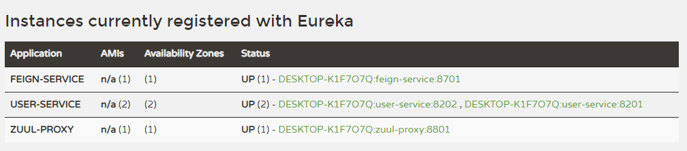
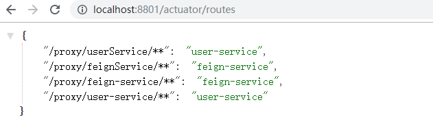
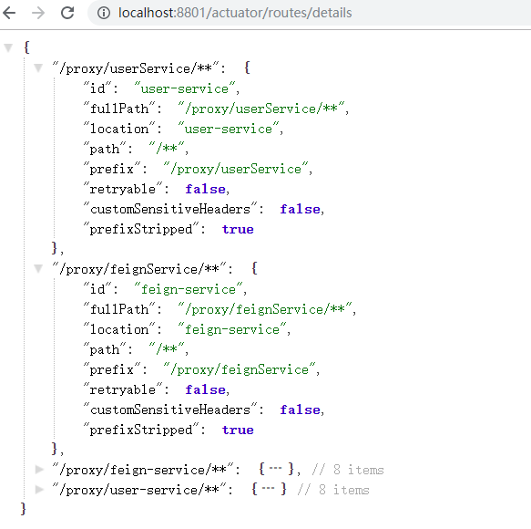

学习不走弯路，关注公众号 回复「学习路线」，获取mall项目专属学习路线！
Spring Cloud Zuul：API网关服务
Spring Cloud Zuul 是Spring Cloud Netflix 子项目的核心组件之一，可以作为微服务架构中的API网关使用，支持动态路由与过滤功能，本文将对其用法进行详细介绍。
Zuul简介
API网关为微服务架构中的服务提供了统一的访问入口，客户端通过API网关访问相关服务。API网关的定义类似于设计模式中的门面模式，它相当于整个微服务架构中的门面，所有客户端的访问都通过它来进行路由及过滤。它实现了请求路由、负载均衡、校验过滤、服务容错、服务聚合等功能。
创建一个zuul-proxy模块
这里我们创建一个zuul-proxy模块来演示zuul的常用功能。
在pom.xml中添加相关依赖
<dependency>
<groupId>org.springframework.cloud</groupId>
<artifactId>spring-cloud-starter-netflix-eureka-client</artifactId>
</dependency>
<dependency>
<groupId>org.springframework.cloud</groupId>
<artifactId>spring-cloud-starter-netflix-zuul</artifactId>
</dependency>
在application.yml中进行配置
server:
port: 8801
spring:
application:
name: zuul-proxy
eureka:
client:
register-with-eureka: true
fetch-registry: true
service-url:
defaultZone: http://localhost:8001/eureka/
在启动类上添加@EnableZuulProxy注解来启用Zuul的API网关功能
@EnableZuulProxy
@EnableDiscoveryClient
@SpringBootApplication
public class ZuulProxyApplication {
public static void main(String[] args) {
SpringApplication.run(ZuulProxyApplication.class, args);
}
}
常用功能
启动相关服务
这里我们通过启动eureka-server，两个user-service，feign-service和zuul-proxy来演示Zuul的常用功能，启动后注册中心显示如下。

配置路由规则
- 我们可以通过修改application.yml中的配置来配置路由规则，这里我们将匹配
/userService/**的请求路由到user-service服务上去，匹配/feignService/**的请求路由到feign-service上去。
zuul:
routes: #给服务配置路由
user-service:
path: /userService/**
feign-service:
path: /feignService/**
访问http://localhost:8801/userService/user/1可以发现请求路由到了user-service上了；
访问http://localhost:8801/feignService/user/1可以发现请求路由到了feign-service上了。
默认路由规则
- Zuul和Eureka结合使用，可以实现路由的自动配置，自动配置的路由以服务名称为匹配路径，相当于如下配置：
zuul:
routes: #给服务配置路由
user-service:
path: /user-service/**
feign-service:
path: /feign-service/**
访问http://localhost:8801/user-service/user/1同样可以路由到了user-service上了；
访问http://localhost:8801/feign-service/user/1同样可以路由到了feign-service上了。
如果不想使用默认的路由规则，可以添加以下配置来忽略默认路由配置：
zuul:
ignored-services: user-service,feign-service #关闭默认路由配置
负载均衡功能
多次调用http://localhost:8801/user-service/user/1进行测试，可以发现运行在8201和8202的user-service服务交替打印如下信息。
2019-10-05 10:31:58.738 INFO 11520 --- [nio-8202-exec-5] c.macro.cloud.controller.UserController : 根据id获取用户信息，用户名称为：macro
2019-10-05 10:32:00.356 INFO 11520 --- [nio-8202-exec-6] c.macro.cloud.controller.UserController : 根据id获取用户信息，用户名称为：macro
配置访问前缀
我们可以通过以下配置来给网关路径添加前缀，此处添加了/proxy前缀，这样我们需要访问http://localhost:8801/proxy/user-service/user/1才能访问到user-service中的接口。
zuul:
prefix: /proxy #给网关路由添加前缀
Header过滤及重定向添加Host
- Zuul在请求路由时，默认会过滤掉一些敏感的头信息，以下配置可以防止路由时的Cookie及Authorization的丢失：
zuul:
sensitive-headers: Cookie,Set-Cookie,Authorization #配置过滤敏感的请求头信息，设置为空就不会过滤
- Zuul在请求路由时，不会设置最初的host头信息，以下配置可以解决：
zuul:
add-host-header: true #设置为true重定向是会添加host请求头
查看路由信息
我们可以通过SpringBoot Actuator来查看Zuul中的路由信息。
- 在pom.xml中添加相关依赖：
<dependency>
<groupId>org.springframework.boot</groupId>
<artifactId>spring-boot-starter-actuator</artifactId>
</dependency>
- 修改application.yaml配置文件，开启查看路由的端点：
management:
endpoints:
web:
exposure:
include: 'routes'
- 通过访问http://localhost:8801/actuator/routes查看简单路由信息：

- 通过访问http://localhost:8801/actuator/routes/details查看详细路由信息：

过滤器
路由与过滤是Zuul的两大核心功能，路由功能负责将外部请求转发到具体的服务实例上去，是实现统一访问入口的基础，过滤功能负责对请求过程进行额外的处理，是请求校验过滤及服务聚合的基础。
过滤器类型
Zuul中有以下几种典型的过滤器类型。
- pre：在请求被路由到目标服务前执行，比如权限校验、打印日志等功能；
- routing：在请求被路由到目标服务时执行，这是使用Apache HttpClient或Netflix Ribbon构建和发送原始HTTP请求的地方；
- post：在请求被路由到目标服务后执行，比如给目标服务的响应添加头信息，收集统计数据等功能；
- error：请求在其他阶段发生错误时执行。
过滤器的生命周期
下图描述了一个HTTP请求到达API网关后，如何在各种不同类型的过滤器中流转的过程。

自定义过滤器
接下来我们自定义一个过滤器来演示下过滤器的作用。
添加PreLogFilter类继承ZuulFilter
这是一个前置过滤器，用于在请求路由到目标服务前打印请求日志。
/**
* Created by macro on 2019/9/9.
*/
@Component
public class PreLogFilter extends ZuulFilter {
private Logger LOGGER = LoggerFactory.getLogger(this.getClass());
/**
* 过滤器类型，有pre、routing、post、error四种。
*/
@Override
public String filterType() {
return "pre";
}
/**
* 过滤器执行顺序，数值越小优先级越高。
*/
@Override
public int filterOrder() {
return 1;
}
/**
* 是否进行过滤，返回true会执行过滤。
*/
@Override
public boolean shouldFilter() {
return true;
}
/**
* 自定义的过滤器逻辑，当shouldFilter()返回true时会执行。
*/
@Override
public Object run() throws ZuulException {
RequestContext requestContext = RequestContext.getCurrentContext();
HttpServletRequest request = requestContext.getRequest();
String host = request.getRemoteHost();
String method = request.getMethod();
String uri = request.getRequestURI();
LOGGER.info("Remote host:{},method:{},uri:{}", host, method, uri);
return null;
}
}
过滤器功能演示
添加过滤器后，我们访问http://localhost:8801/user-service/user/1测试下，会打印如下日志。
2019-10-05 15:13:10.232 INFO 11040 --- [nio-8801-exec-7] com.macro.cloud.filter.PreLogFilter : Remote host:0:0:0:0:0:0:0:1,method:GET,uri:/user-service/user/1
核心过滤器
| 过滤器名称 | 过滤类型 | 优先级 | 过滤器的作用 |
|---|---|---|---|
| ServletDetectionFilter | pre | -3 | 检测当前请求是通过DispatcherServlet处理运行的还是ZuulServlet运行处理的。 |
| Servlet30WrapperFilter | pre | -2 | 对原始的HttpServletRequest进行包装。 |
| FormBodyWrapperFilter | pre | -1 | 将Content-Type为application/x-www-form-urlencoded或multipart/form-data的请求包装成FormBodyRequestWrapper对象。 |
| DebugFilter | route | 1 | 根据zuul.debug.request的配置来决定是否打印debug日志。 |
| PreDecorationFilter | route | 5 | 对当前请求进行预处理以便执行后续操作。 |
| RibbonRoutingFilter | route | 10 | 通过Ribbon和Hystrix来向服务实例发起请求，并将请求结果进行返回。 |
| SimpleHostRoutingFilter | route | 100 | 只对请求上下文中有routeHost参数的进行处理，直接使用HttpClient向routeHost对应的物理地址进行转发。 |
| SendForwardFilter | route | 500 | 只对请求上下文中有forward.to参数的进行处理，进行本地跳转。 |
| SendErrorFilter | post | 0 | 当其他过滤器内部发生异常时的会由它来进行处理，产生错误响应。 |
| SendResponseFilter | post | 1000 | 利用请求上下文的响应信息来组织请求成功的响应内容。 |
禁用过滤器
- 我们可以对过滤器进行禁用的配置，配置格式如下：
zuul:
filterClassName:
filter:
disable: true
- 以下是禁用PreLogFilter的示例配置：
zuul:
PreLogFilter:
pre:
disable: true
Ribbon和Hystrix的支持
由于Zuul自动集成了Ribbon和Hystrix，所以Zuul天生就有负载均衡和服务容错能力，我们可以通过Ribbon和Hystrix的配置来配置Zuul中的相应功能。
- 可以使用Hystrix的配置来设置路由转发时HystrixCommand的执行超时时间：
hystrix:
command: #用于控制HystrixCommand的行为
default:
execution:
isolation:
thread:
timeoutInMilliseconds: 1000 #配置HystrixCommand执行的超时时间，执行超过该时间会进行服务降级处理
- 可以使用Ribbon的配置来设置路由转发时请求连接及处理的超时时间：
ribbon: #全局配置
ConnectTimeout: 1000 #服务请求连接超时时间（毫秒）
ReadTimeout: 3000 #服务请求处理超时时间（毫秒）
常用配置
zuul:
routes: #给服务配置路由
user-service:
path: /userService/**
feign-service:
path: /feignService/**
ignored-services: user-service,feign-service #关闭默认路由配置
prefix: /proxy #给网关路由添加前缀
sensitive-headers: Cookie,Set-Cookie,Authorization #配置过滤敏感的请求头信息，设置为空就不会过滤
add-host-header: true #设置为true重定向是会添加host请求头
retryable: true # 关闭重试机制
PreLogFilter:
pre:
disable: false #控制是否启用过滤器
使用到的模块
springcloud-learning
├── eureka-server -- eureka注册中心
├── user-service -- 提供User对象CRUD接口的服务
├── feign-service -- feign服务调用测试服务
└── zuul-proxy -- zuul作为网关的测试服务
项目源码地址
https://github.com/macrozheng/springcloud-learning
公众号